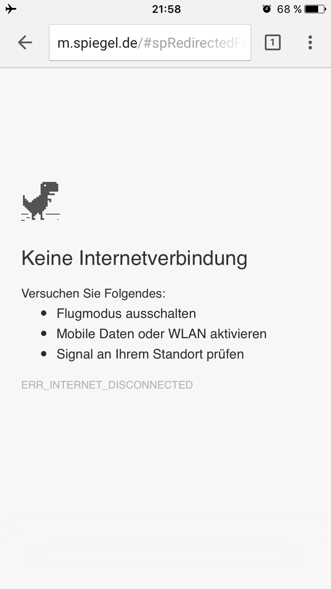
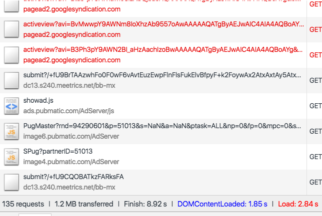
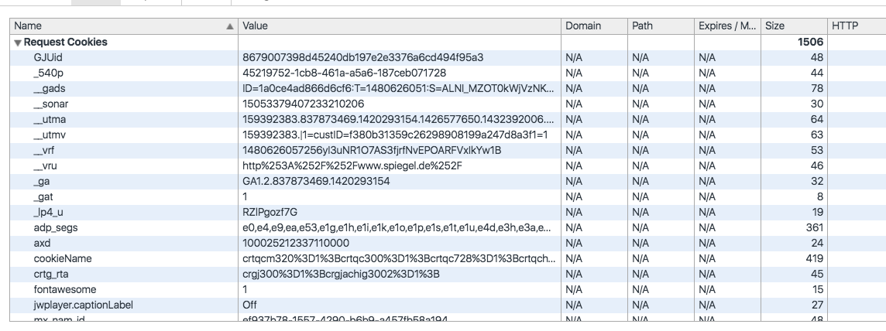
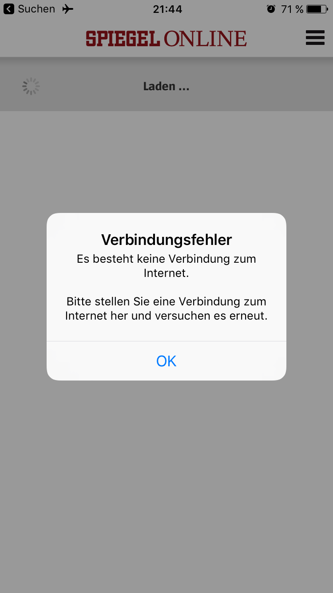
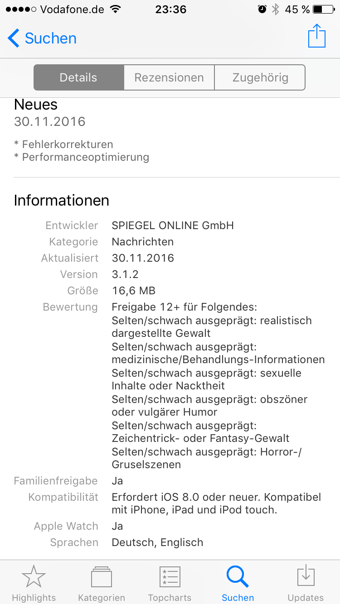
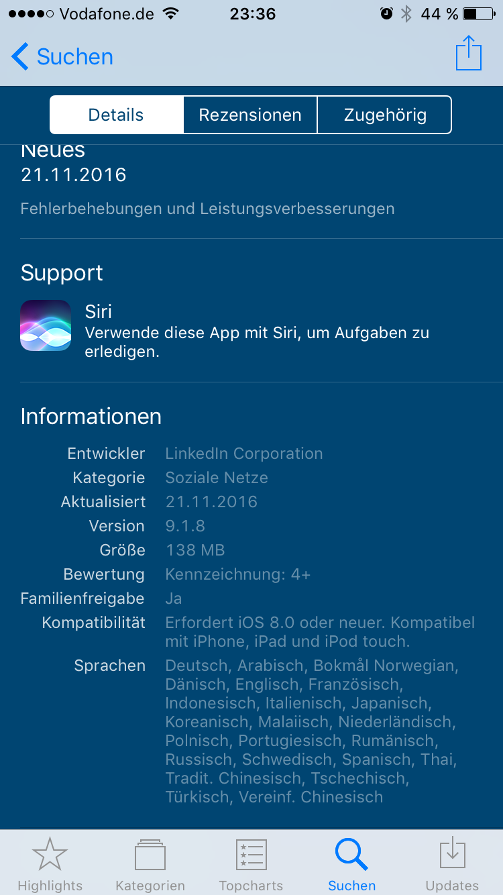
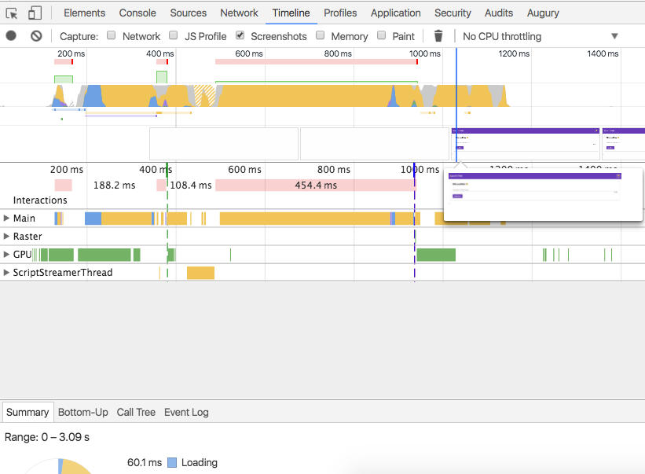

PROGRESSIVE WEB APPS
MIT ANGULAR 2
Sebastian Müller - @Sebamueller
adesso SummIT 2016

Was sind Progressive Web Apps?
Buzzword!
UX
User experience
Progressive Enhancement
Web
App Like
Darunter fällt
- Performance
- Offline-fähigkeit (News auch offline lesen)
- Push Notifications
- "App-Feeling" (App Icon, Fullscreen Modus)
- HTTPS / HTTP2
- Hardware APIs nutzen
PWA Video
Google Developers
Mobile Websites sind häufig
💩💩💩💩💩
Spiegel Online Web App
Spiegel Online...Offline
Assets
Cookie Hell
(1kb Cookies/Request)

SPON iPhone App
SPON iPhone App - Offline
SPON iPhone App - 16,6 MB
LinkedIn iPhone App - 138MB !!!
Das geht besser...
Progressive Web App mit Angular 2
PWA DEMO
Jetzt aufrufen!
Lautsprecher an!
 http://bit.ly/summit-pwa
http://bit.ly/summit-pwa
Wer ist online? - Aktuell 0
http://bit.ly/summit-pwa
Offline-fähigkeit
Service Worker
Service Worker
- JS basierter "Proxy für Websites"
- Läuft in einem separaten Thread
- Läuft auch, wenn die Seite oder der Browser gerade nicht geöffnet ist*
-
Weitere Features:
- Gezieltes Caching via JS Logik
- Push Notifications
- Synchronisierung*
- HTTPS zwingend notwendig
Service Worker installieren
if ('serviceWorker' in navigator) {
navigator.serviceWorker.register('/sw.js').then(reg => {
// Registration was successful
console.log('ServiceWorker success');
}).catch(function(err) {
// registration failed :(
console.log('failed: ', err);
});
}
Service Worker - Caching
var CACHE_NAME = 'my-site-cache-v1';
var urlsToCache = [
'/',
'/styles/main.css',
];
self.addEventListener('install', function(event) {
// Perform install steps
event.waitUntil(
caches.open(CACHE_NAME)
.then(function(cache) {
console.log('Opened cache');
return cache.addAll(urlsToCache);
})
);
});
Service Worker - fetch
self.addEventListener('fetch', function(event) {
event.respondWith(
caches.match(event.request)
.then(function(response) {
// Cache hit - return response
if (response) {
return response;
}
return fetch(event.request);
}
)
);
});
Service Worker
=
Low Level API
Service Worker Precache
(sw-precache)
- CLI Tool
- Generiert Service Worker für Offline-Support
- Cached alle Assets
- Kombinierbar mit Gulp und Webpack
- Erstellt MD5 hashes für Files
sw-precache --root=dist --static-file-globs='dist/**/*.html'
Service Worker Toolbox
(sw-toolbox)
- Library für Service Worker
- High Level API
- Runtime Caching Support
// router
toolbox.router.get(':foo/index.html', function(request, values) {
return new Response('Handled a request for ' + request.url +
', where foo is "' + values.foo + '"');
});
// precaching
toolbox.precache(['/index.html', '/site.css', '/images/logo.png']);
Browser API
DeviceOrientation API
- Besonders nützlich für
- Spiele
- Parallax Effekte
- Keine gesonderten Berechtigungen notwending
window.addEventListener('deviceorientation', (event) => {
console.log(event.alpha);
console.log(event.beta);
console.log(event.gamma);
});DeviceOrientation API
DeviceOrientation Demo
Speech Synthesis API
- Text-to-Speech
- Viele Sprachen unterstüzt
- Internetverbindung notwendig
Speech Synthesis API
Text:Pitch:
Rate:
WebAudio API
todo: button in pwa erstellenPerformance Tipps
First Meaningful Paint Time
Lighthouse
https://github.com/GoogleChrome/lighthouse
- Analyse-Tool für Progressive Web Apps
- Wird entwickelt vom Google Chrome Team
- Chrome Extension & CLI
- Der neue HTML Validator™